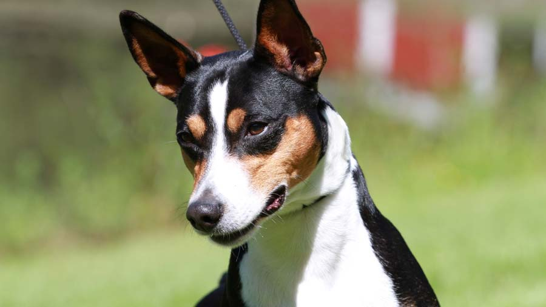
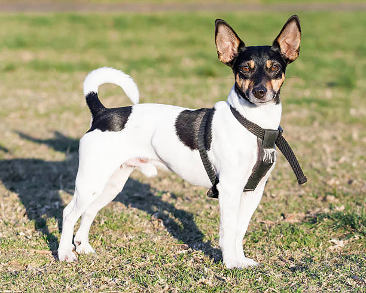
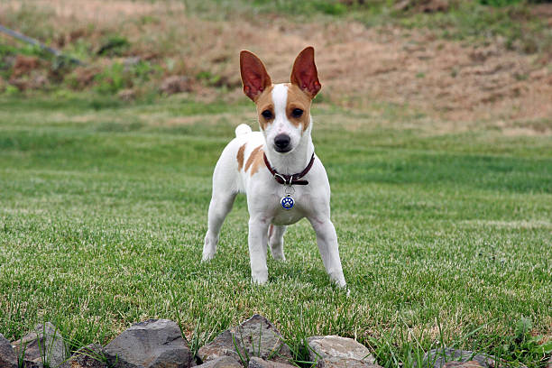
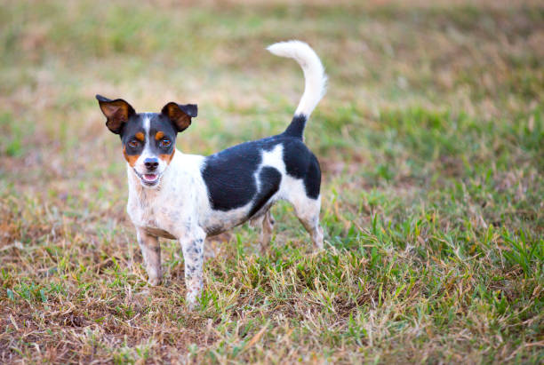

Rat Terrier

origin
United States
size
Small
color
Black
type
Purebred
breed group
Terrier (AKC:2013 & UKC)
character
Fluffy
temperament
Affectionate, Inquisitive, Lively
height
14-23 inches (35.5-58.5 cm)
weight
12-35 pounds (5.5-16 kg)
geography
North America
overview
The Rat Terrier is a multipurpose companion dog that is capable of hunting rodents and vermin above and below ground as well as coursing small game. He is a sturdy, compact, small-to-medium sized parti-colored dog giving the appearance of elegance and athleticism. His short, smooth coat may come in any variation of pied patterning. Pied is described as comparatively large patches of one or more colors in combination with white. Acceptable colors, with or without tan points, include the predominate black, or chocolate, red, apricot, blue, fawn, tan, or lemon.
history
The Rat Terrier is an American breed descended from the terriers brought over by English miners and other working class immigrants. These terriers probably included crosses between the Smooth Fox Terrier, the Manchester Terrier and the now extinct white English Terrier. These dogs were used as ratters, and gambling on their prowess in killing rats was a favorite hobby of their owners.
Some of these dogs were crossed with Whippets or Italian Greyhounds (for speed) and Beagles (for hunting ability). Eventually, these tough little terriers evolved into today’s Rat Terrier. The breed was popularized by President Teddy Roosevelt, who frequently hunted with his Rat Terriers. Many are still used as ratters and squirrel hunters, particularly in the South, where they are sometimes known as “Feists”. The Rat Terrier was officially recognized by the AKC in 2013.
Photo Gallery


